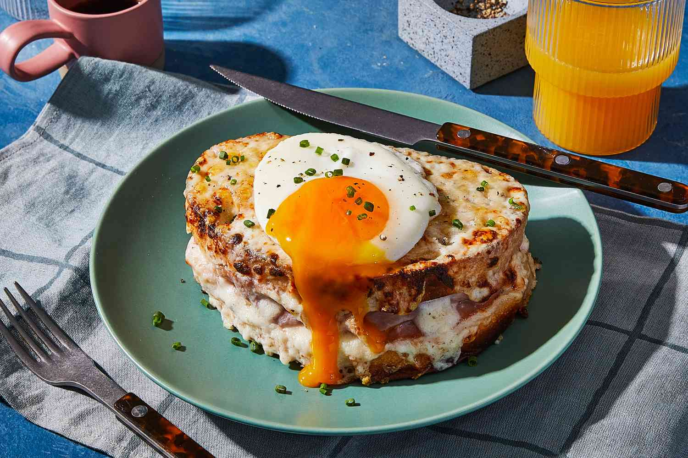

The Grilliest Cheese ever

A delicious healthy snack
This american classic is not only delicious and low cost
but healthy,boasting mucle grow and making our boned and teeths
stronger.
Originating from the great depression this snack is trully an american classic
that has become an staple of the americam cuisine.
ingredients
- 4 slices white bread
- 3 tablespoons butter, divided
- 2 slices Cheddar cheese
Here are the steps on how to make the perfect hamburger!
- Preheat a nonstick skillet over medium heat. Generously butter one side of a slice of bread. Place bread butter-side down in the hot skillet; add 1 slice of cheese. Butter a second slice of bread on one side and place butter-side up on top of cheese.
- Cook until lightly browned on one side; flip over and continue cooking until cheese is melted. Repeat with remaining 2 slices of bread, butter, and slice of cheese.